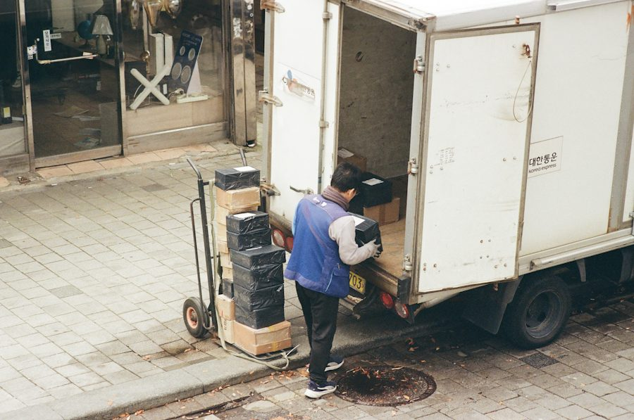
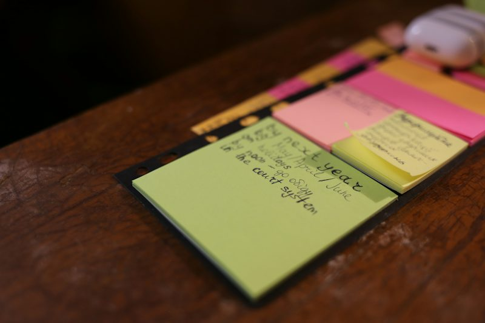

By Session 40 you can do four things in English
Real, short, adult situations. No technical jargon and no private stories you do not want to tell: you can always work with fictional cases.
Forty steps, four blocks
Tap any step to see what you will do and the twist you will face. Completed sessions turn green.
Sixty minutes, one clear route
Every session follows the same rhythm, but the games, cards and missions change each time.
Evidence, not attendance
Nobody moves on because of hours. You move on when you complete the task, are understood, use the focus language and repair a difficulty.
The four-point check
- 1You complete the purpose. The other person can act on what you said.
- 2You are understood. Pace and pronunciation are clear enough.
- 3You use the focus language of the session.
- 4You repair a difficulty. You correct or rephrase and try again.
Four moments of proof
- S10Quiz 1: a better week, not a busier week.
- S20Quiz 2: make the smart choice.
- S30Quiz 3: make it work with other people.
- S40Final quiz: make life work, with a 60–90 second production.
Your four blocks
Open sessions are ready now. The rest unlock as they are published, one by one.

A Life That Works
Talk about your daily life, rules and preferences with simple reasons.
Smart Choices, Real Conversations
Ask before you choose and recommend a practical option.

People, Boundaries and Making Things Work
Solve an everyday interaction clearly and respectfully.
Modern Life, Small Changes and Next Steps
Combine present, brief past and simple future in one realistic decision.